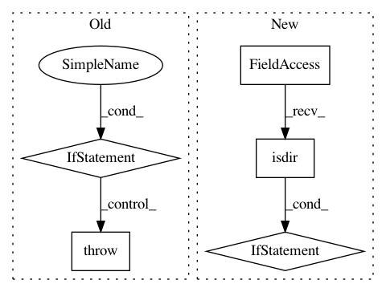

43587c64f9e25467c17394504a327d90e05b865c,official/nlp/tasks/sentence_prediction.py,SentencePredictionTask,initialize,#SentencePredictionTask#Any#,127
Before Change
}
ckpt = tf.train.Checkpoint(**pretrain2finetune_mapping)
latest_pretrain_ckpt = tf.train.latest_checkpoint(pretrain_ckpt_dir)
if latest_pretrain_ckpt is None:
raise FileNotFoundError(
"Cannot find pretrain checkpoint under {}".format(pretrain_ckpt_dir))
status = ckpt.restore(latest_pretrain_ckpt)
status.expect_partial().assert_existing_objects_matched()
logging.info("finished loading pretrained checkpoint.")
After Change
def initialize(self, model):
Load a pretrained checkpoint (if exists) and then train from iter 0.
ckpt_dir_or_file = self.task_config.init_checkpoint
if tf.io.gfile.isdir(ckpt_dir_or_file):
ckpt_dir_or_file = tf.train.latest_checkpoint(ckpt_dir_or_file)
if not ckpt_dir_or_file:
return
pretrain2finetune_mapping = {
In pattern: SUPERPATTERN
Frequency: 3
Non-data size: 5
Instances
Project Name: tensorflow/models
Commit Name: 43587c64f9e25467c17394504a327d90e05b865c
Time: 2020-06-16
Author: hongkuny@google.com
File Name: official/nlp/tasks/sentence_prediction.py
Class Name: SentencePredictionTask
Method Name: initialize
Project Name: Microsoft/MMdnn
Commit Name: fdeeaff5e452e257bf3a3dd76e25c81304cc4c98
Time: 2020-03-15
Author: linmajia@users.noreply.github.com
File Name: mmdnn/conversion/examples/tensorflow/vis_meta.py
Class Name:
Method Name: _main
Project Name: pantsbuild/pants
Commit Name: 272e8e62d42aefa3d2547ae9108858ffb7c2d172
Time: 2017-05-25
Author: stuhood@twitter.com
File Name: src/python/pants/backend/jvm/tasks/bundle_create.py
Class Name: BundleCreate
Method Name: bundle